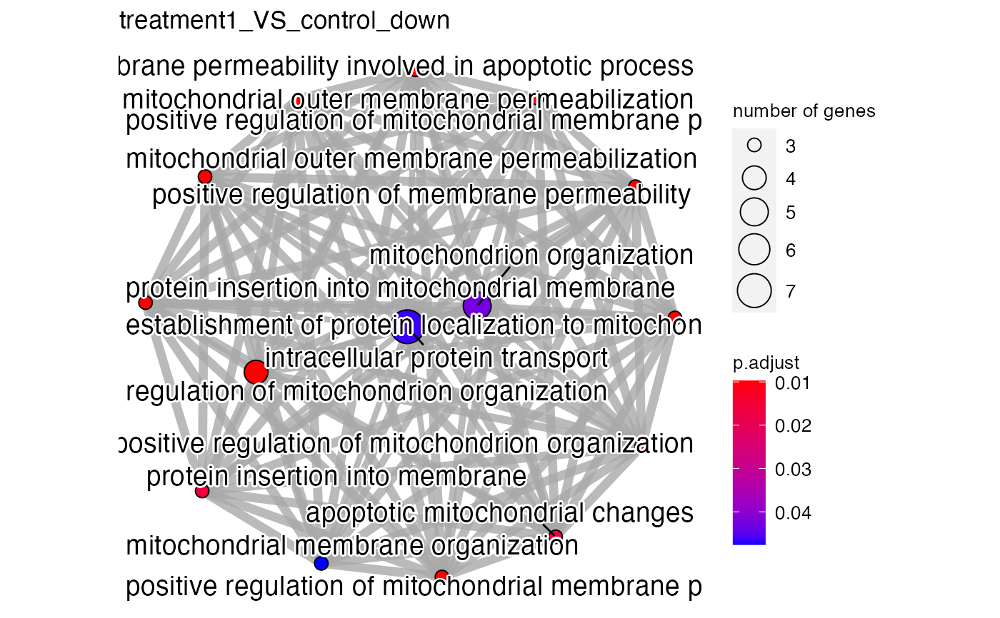

Perform gene ontology analysis and visualization for DE genesets in one go.
Source:R/viz_related.R
get_go_emap_plot.RdPerform gene ontology analysis and visualization for DE genesets in one go.
Usage
get_go_emap_plot(
x,
org_db = org.Hs.eg.db::org.Hs.eg.db,
universe = NULL,
ont_type = "BP",
p_adj_method = "BH",
pval_cutoff = 0.05,
qval_cutoff = 0.05,
min_geneset_size = 10,
max_geneset_size = 500,
go_similarity_cutoff = 0.8,
show_n_terms = 30,
color_terms_by = "p.adjust"
)Arguments
- x
an object of class 'parcutils' or 'parcutils_ir'.
- org_db
an object of the class class OrgDB, default
org.Hs.eg.db- universe
a character vector of genes, default NULL, to be used as background genes for GO enrichment analysis. Currently supports only ENSEMBL gene id - e.g. ENSMUSG00000030787. When set to NULL all genes from x will be used as background genes.
- ont_type
a character string, default
"BP", denoting ontology type. Values can be one of the"BP", "MF" , "CC"- p_adj_method
a character string, default
"BH", denoting a method for p-adjustment. Values can be one of the"holm", "hochberg", "hommel", "bonferroni", "BH", "BY", "fdr", "none"- pval_cutoff
a numeric, default
0.05denoting p-value cutoff.- qval_cutoff
a numeric, default
0.05denoting q-value cutoff.- min_geneset_size
a numeric, default
10, denoting minimal size of genes annotated by ontology term for testing.- max_geneset_size
a numeric, default
500, denoting maximal size of genes annotated by ontology term for testing.- go_similarity_cutoff
a numeric value, default
0.8, denoting gene ontology similarity cutoff.- show_n_terms
a numeric, default
30, denoting number of gene ontology terms to show in the plot.- color_terms_by
a character string, default
"p.adjust", denoting a variable to color gene ontology terms.
Examples
count_file <- system.file("extdata","toy_counts.txt" , package = "parcutils")
count_data <- readr::read_delim(count_file, delim = "\t", show_col_types = FALSE)
sample_info <- count_data %>% colnames() %>% .[-1] %>%
tibble::tibble(samples = . , groups = rep(c("control" ,"treatment1" , "treatment2"), each = 3) )
res <- parcutils::run_deseq_analysis(counts = count_data %>% dplyr::mutate(gene_id = stringr::str_replace(gene_id, ":.*","")),
sample_info = sample_info,
column_geneid = "gene_id" ,
group_numerator = c("treatment1", "treatment2") ,
group_denominator = c("control"))
#> ℹ Running DESeq2 ...
#> converting counts to integer mode
#> Warning: some variables in design formula are characters, converting to factors
#> estimating size factors
#> estimating dispersions
#> gene-wise dispersion estimates
#> mean-dispersion relationship
#> final dispersion estimates
#> fitting model and testing
#> ✔ Done.
#> ℹ Summarizing DEG ...
#> ✔ Done.
go_out <- get_go_emap_plot(res)
#> ℹ `universe` is set to <NULL> Default all expressed genes from `x` will be used as background genes.
# display plot
go_out$go_emap_plots
#> $treatment1_VS_control_down

#>
# display table
go_out$go_enrichment_output %>% tibble::as_tibble()
#> # A tibble: 15 × 1
#> treatment1_VS_co… $Description $GeneRatio $BgRatio $pvalue $p.adjust $qvalue
#> <chr> <chr> <chr> <chr> <dbl> <dbl> <dbl>
#> 1 GO:0010821 regulation o… 4/25 31/3462 5.84e-5 0.00974 0.00897
#> 2 GO:0051204 protein inse… 3/25 13/3462 9.08e-5 0.00974 0.00897
#> 3 GO:0010822 positive reg… 3/25 14/3462 1.15e-4 0.00974 0.00897
#> 4 GO:0090151 establishmen… 3/25 14/3462 1.15e-4 0.00974 0.00897
#> 5 GO:0097345 mitochondria… 3/25 14/3462 1.15e-4 0.00974 0.00897
#> 6 GO:1902108 regulation o… 3/25 14/3462 1.15e-4 0.00974 0.00897
#> 7 GO:1902110 positive reg… 3/25 14/3462 1.15e-4 0.00974 0.00897
#> 8 GO:0035794 positive reg… 3/25 15/3462 1.43e-4 0.00974 0.00897
#> 9 GO:1902686 mitochondria… 3/25 15/3462 1.43e-4 0.00974 0.00897
#> 10 GO:1905710 positive reg… 3/25 15/3462 1.43e-4 0.00974 0.00897
#> 11 GO:0051205 protein inse… 3/25 19/3462 2.99e-4 0.0157 0.0144
#> 12 GO:0008637 apoptotic mi… 3/25 20/3462 3.50e-4 0.0170 0.0157
#> 13 GO:0007005 mitochondrio… 5/25 110/3462 9.45e-4 0.0429 0.0395
#> 14 GO:0006886 intracellula… 7/25 238/3462 1.09e-3 0.0465 0.0429
#> 15 GO:0007006 mitochondria… 3/25 30/3462 1.19e-3 0.0476 0.0438